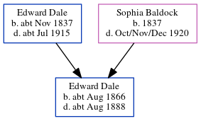

Jane Elizabeth Goulder (née Dale) 1868 - c1954
[ Home ] | [ Calendar ] | [ Surnames Index ] | [ Errors ] | [ Family History ]The child of Edward Dale (a bricklayer's labourer) and Sophia Baldock, Jane Dale, the first cousin three-times-removed on the father's side of Nigel Horne, was born in Thanington, Kent, England in 18681, was baptised there at St Nicholas on 16 Aug 1868 was married twice - to Thomas Holbrook (c. Feb 1893 in Canterbury, Kent, England) Albert Goulder2. She had 5 children with Thomas Holbrook: Charles, Louisa Jane, Steven George, Florence Mildred and Henry T.
During her life, she was living at Modern Cottages, Wincheap Street in Thanington in 18713 and on 2 Apr 18714; at Sturry Road in Canterbury on 3 Apr 18815; and at Military Road in Canterbury on 2 Apr 19116.
She died c. Feb 1954 in Canterbury1.
Parents
- Edward was born c. Nov 1837
- Sophia was born in 1837
Children
- Charles was born in 1893
- Florence Mildred was born c. 1898
- Henry T was born c. 1899
Citations
- England & Wales deaths 1837-2007 - Findmypast
- England & Wales Marriages 1837-2005 - Findmypast
- 1871 England, Wales & Scotland Census - Findmypast
- 1871 England, Wales & Scotland Census - Findmypast (was age 2 and the daughter of the head of the household)
- 1881 England, Wales & Scotland Census - Findmypast (was age 12 and the daughter of the head of the household)
- 1911 Census for England & Wales - Findmypast (was age 42 and the head of the household)
Media
England & Wales births 1837-2006 - BMD/B/1868/3/AZ/000139/304
1871 England, Wales & Scotland Census - GBC/1871/0014166404
England & Wales marriages 1837-2005 - BMD/M/1893/1/AZ/000057/049
Kent Baptisms - GBPRS/CANT/B/96713984
England & Wales deaths 1837-2007 - BMD/D/1954/1/AZ/000562/090
1911 Census for England & Wales - GBC/1911/RG14/04334/0317/1
Family Tree
Map
Generated by ged2site. Last updated on Jul 3, 2024
Known Issues
Date of baptism (16 Aug 1868) before date of birth (1868)
Date of residence (1871) differs from mother's in same year (2 Apr 1871)
1871: Not living with either parent in childhood when aged 3
1939 UK register information missing